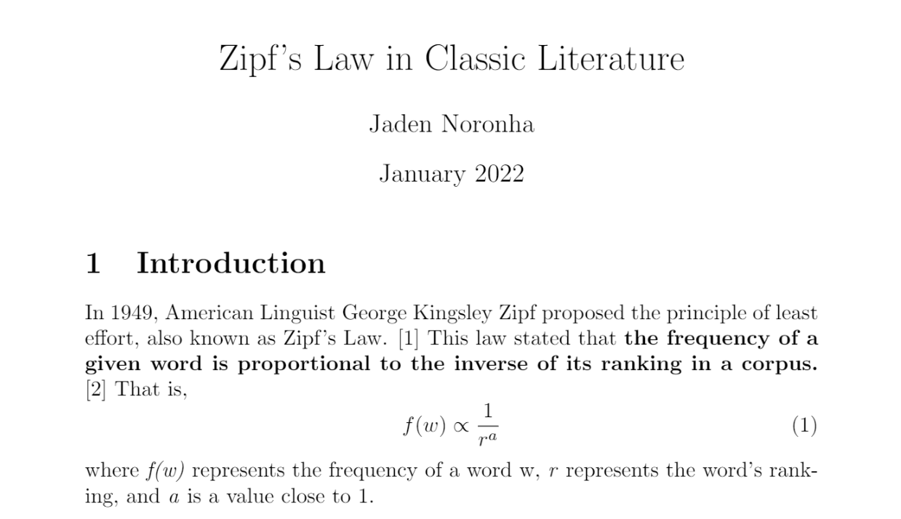

|

A screenshot of the report. A graph from the report. |
Inspired by a video posted by the Youtube channel "Vsauce", I decided
to analyze the occurrence of Zipf's law in the ten most popular English books available on
Project Gutenberg. The law proposes that the frequency of a given word is proportional to the
inverse of its ranking in a body of text. This law is used to roughly describe
the distribution of words in human languages and has been applied in psychology, sociology,
and economics. |